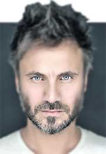
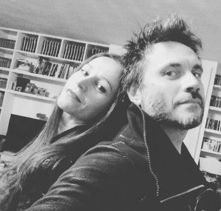

BIOGRAFIA
 NEK es un cantautor italiano, nacido en Sassulo el 6 de enero de 1972,
su nombre real es Filippo Neviani.
Su inquietud por la música está presente desde que era muy pequeño.
Con cuatro años le regalan una batería de juguete.
A los nueve años
comienza a recibir clases de guitarra. Estuvo influido por la música de
Vasco Rossi y Lucio Dalla.
En el añ
o 1984 crea "Winchester", un dúo con su amigo Gianluca Vaccari.
Empezaron a tocar en pequeñas salas y se hicieron muy conocidos en la zona.
En 1988 se separan. Nek entra en el grupo "White Lady", como bajo y cantante.
Este grupo también se separa, por lo que decide seguir su camino como solista.
Participa en 1991 en el festival de Castrocaro, donde queda en segundo puesto.
En 1992 publica su primer álbum en solitario "Nek", con diez temas escritos casi
exclusivamente por él. En 1993 participó en el Festival de la Canción de
San Remo con tema que hablaba sobre el aborto «En ti (el hijo que no deseas)».
Quedó en tercera posición. La canción creó
una gran polémica en Italia, a pesar de la cual, Nek publicó unas
semanas después su segundo álbum, "In Te".
Se lanzó su tercer disco Calore Umano, y obtuvo la segunda posición en el
Festival Italiano con la canción Angeli nel ghetto. También recibe el premio
como mejor joven cantante italiano, premio compartido con
la cantante Giorgia Trovato.
Fichó por Don't Worry Records, con la que publica un nuevo trabajo,
"Los amigos y todo lo demás", en el que Nek cuenta sus experiencias
acerca del amor y la amistad. El disco tiene muy buena acogida por
parte del público y consigue un buen nivel de ventas.
En 1997 participa de nuevo en el Festival de San Remo,
no ganó nada pero con «Laura non c'è» («Laura no está»)
llega inmediatamente a las listas de popularidad italianas,
e internacionales. Las ventas del álbum se multiplican,
tanto en Italia, como en España, Alemania, Francia, Latinoamérica, etc.
En pocos meses consigue vender más de un millón y medio de
copias sólo en Europa. El álbum vende en Italia alrededor de
600.000 copias, obteniendo 6 discos de platino, y discos de oro
en Alemania, Austria, Suiza, y formidables ventas de su disco en
castellano, tanto en México, Centroamérica y Sudamérica.
Ese mismo año participó también en el Festivalbar con el tema "Sei grande".
En 1998 publica "Entre tú y yo", con la colaboración de Massimo Varini en
los arreglos volviendo a cosechar también grandes éxitos en Europa.
"Si Sé Que Te Tengo A Ti", el primer single extraído del nuevo álbum,
se mantuvo en lo más alto de las listas de éxitos radiofónicas durante
cuatro meses. El 9 de Julio de 1998 le concedieron en Bruselas el Premio
IFPI por haber superado el millón de copias vendidas en Europa con su disco
"Nek". "Entre Tú y Yo" fue tres veces platino en Italia; oro en Austria,
Suiza y Argentina, y platino en España.
En el año 2000, sale a la venta "La vida es", este disco es innovador
debido a que posee una firme mezcla de pop-rock, fusionada con música
electrónica. De él se extrae el single «Ci sei tu» («Llegas tú»),
y también otro sencillo llamado «La vita è» («La vida es»), en el que
colaboró el grupo Eiffel 65. Tras una nueva gira mundial, Nek recibe
un premio Grammy como artista revelación del año 2000.
El 24 de Mayo de 2002 se publicó "Las cosas que defenderé",
con la colaboración de Laura Pausini en el tema inicial del álbum,
titulada "Tan solo tú". En 2004, editó un disco recopilatorio con su
mejores éxitos, "The best of Nek: l'anno zero" (El año cero - Lo mejor de Nek),
que en poco tiempo vende 250.000 copias. Un año después, en 2005,
salió a la venta el álbum, "Una parte de mí". El primer sencillo
fue «Lascia che io sia», que venció en el Festivalbar en Italia.
Posteriormente es traducida al español bajo el título «Para ti sería».
En España reeditó su álbum "En el cuarto 26" con dos canciones en las que
colabora el grupo El sueño de Morfeo, grupo con el que colaboró en el disco
"Nos vemos en el camino de El sueño de Morfeo". El 30 de enero de 2009 se
lanzó en Italia un disco con canciones inéditas "Un'altra direzione", cuyo
primer sencillo es «La voglia che non vorrei». En España el disco se puso a
la venta el 28 de abril de 2009 y se tituló "Nuevas direcciones", con
«Deseo que ya no puede ser» como primer sencillo. A últimos de 2010 sale
a la venta su segundo disco recopilatorio "E da qui - The Greatest Hits 1992-2010".

Contrajo matrimonio en septiembre de 2006 con su ex-asistente, Patrizia Vacondio.
El 13 de septiembre de 2010 anuncia la noticia del nacimiento de su primera hija,
Beatrice Maria.
El 16 de abril de 2013, se lanzó el nuevo álbum del inédito "Filippo Neviani",
que fue transmitido en la radio por el sencillo "Conjunción Astral".
En febrero de 2015 regresó al escenario del Festival de Sanremo después de 18 años
con la canción "Fatti avanti amore" con la que ganó el Premio Mejor Arreglo,
el Premio Radio - TV Press Room, el Premio Especial por la canción más radio
y obtuvo el segundo lugar en el Festival.
El 2 de marzo, se lanzó el álbum inédito "Prima di parla" (certificado de platino),
seguido de una gira de suerte en los teatros que se agotaron en todas las ciudades.
Su cover de "Se telefonando", presentado en el escenario del Festival de Sanremo,
es una de las canciones más transmitidas del verano y en septiembre "Io ricomincerei",
el tercer sencillo de "Antes de hablar", y el libro "Lettera a mi hija enamorada ".
El 6 de mayo de 2016, mientras se compromete como Director Artístico (junto con J-Ax)
del Equipo Azul para "Friends", se lanza el nuevo single "One of these days".